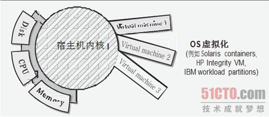
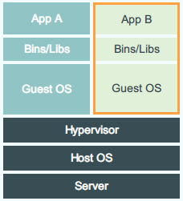
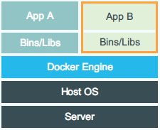

Docker 是操作系统级别的轻量级虚拟化技术，也就是实现轻量级的操作系统虚拟化。它能够让应用的分发、部署和管理都变得前所未有的高效和轻松。同时它也是一个用 go 语言实现的开源项目，源代码在 github 上。那么什么是虚拟化？什么又是操作系统虚拟化？
- 虚拟化，是指通过虚拟化技术将一台计算机虚拟为多台逻辑计算机。在一台计算机上同时运行多个逻辑计算机，每个逻辑计算机可运行不同的操作系统，并且应用程序都可以在相互独立的空间内运行而互不影响，从而显著提高计算机的工作效率。
物理机，是相对于虚拟机而言的对实体计算机的称呼。物理机提供给虚拟机以硬件环境，有时也称为“寄主”或“宿主”。通过物理机和虚拟机的配合，一台计算机上可以安装上多个操作系统（一个外界操作系统和虚拟机中的数个操作系统），并且几个操作系统间还可以实现通信，就像是有多台计算机一样。- 操作系统级虚拟化: 在传统操作系统中，所有用户的进程本质上是在同一个操作系统的实例中运行，因此内核或应用程序的缺陷可能影响到其它进程也可能受其它进程的影响。它是一种在服务器操作系统中使用的轻量级的虚拟化技术，内核通过创建多个虚拟的操作系统实例（内核和库）来隔离不同的进程，不同实例中的进程完全不了解对方的存在。它并不在物理系统里创建多个虚拟机环境，而是让一个操作系统创建多个彼此独立的应用环境，这些应用环境都访问同一个内核。

Containers VS VMs
Docker Container 和 普通的虚拟机 Image 相比, 最大的区别是它并不包含操作系统内核。
传统的虚拟化技术(VM)

传统的虚拟化技术(VM)的Hypervisor需要实现对硬件的虚拟化，并且还要搭载自己的操作系统，自然在启动速度和资源利用率以及性能上有比较大的开销。普通虚拟机将整个操作系统运行在虚拟的硬件平台上, 进而提供完整的运行环境供应用程序运行。
VM 是一个运行在宿主机之上的完整的操作系统，包含了大量类似硬件驱动、虚拟处理器、网络接口等等并不需要的信息。VM运行自身操作系统会占用较多的CPU、内存、硬盘资源。
容器虚拟化技术(Docker)

Docker几乎就没有什么虚拟化的东西，并且直接复用了 Host 主机的 OS，在 Docker Engine 层面实现了调度和隔离重量一下子就降低了好几个档次。 Docker 的容器利用了LXC，管理利用了namespaces来做权限的控制和隔离，cgroups来进行资源的配置，并且还通过aufs来进一步提高文件系统的资源利用率。Docker Container来说启动和销毁都是秒级的，而且它底层依赖的技术lxc(linux container)完全是内核特性，没有任何中间层开销，对于资源的利用率极高性能接近物理机。